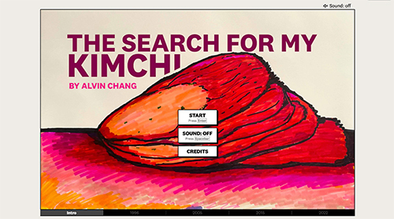
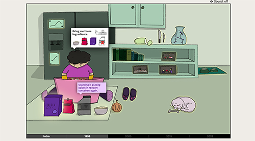

The search for my kimchi - The Pudding
 The search for my kimchi is a website created by Alvin Chang that opens a discussion about the Korean American experience with cultural foods like kimchi. The website utilizes on click, tap/press down interactions to take users on a journey of a Korean American trying to recreate his grandma's kimchi recipe. The website also incoporates data about food supply, Korean immigration, Korean restaurantes, and kimchi recipes.